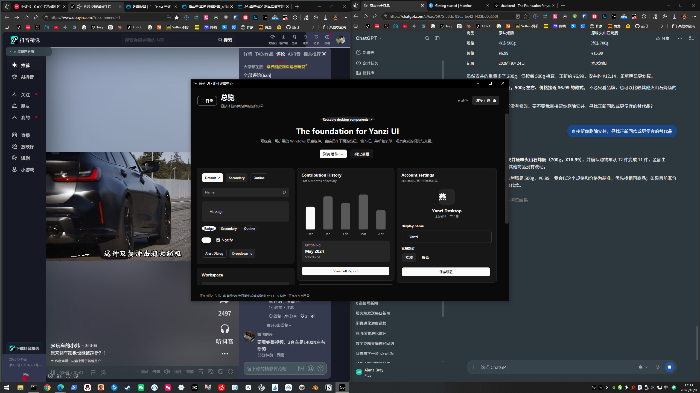

EXPAND VIEW AI OS · 核心架构燕子 (Yanzi / OpenQuickHost) · AI 桌面操作系统
专为 AI 智能体打造的本地宿主系统。打破沙箱限制，赋能大模型直接感知与调度物理桌面。
- 能力自发现 (Capability Network)：AI 自主查询宿主功能，动态理解参数 Schema 契约。
- 跨程序编排调度：基于 Invocation 协议组合调度窗口、剪贴板与外部进程，全程有界审计。
- 底层低延迟架构：基于 .NET 9 与 Win32 全局挂钩，获国家计算机软件著作权登记认证。